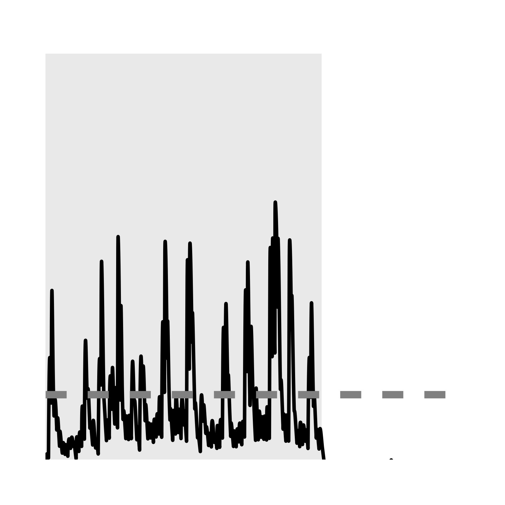
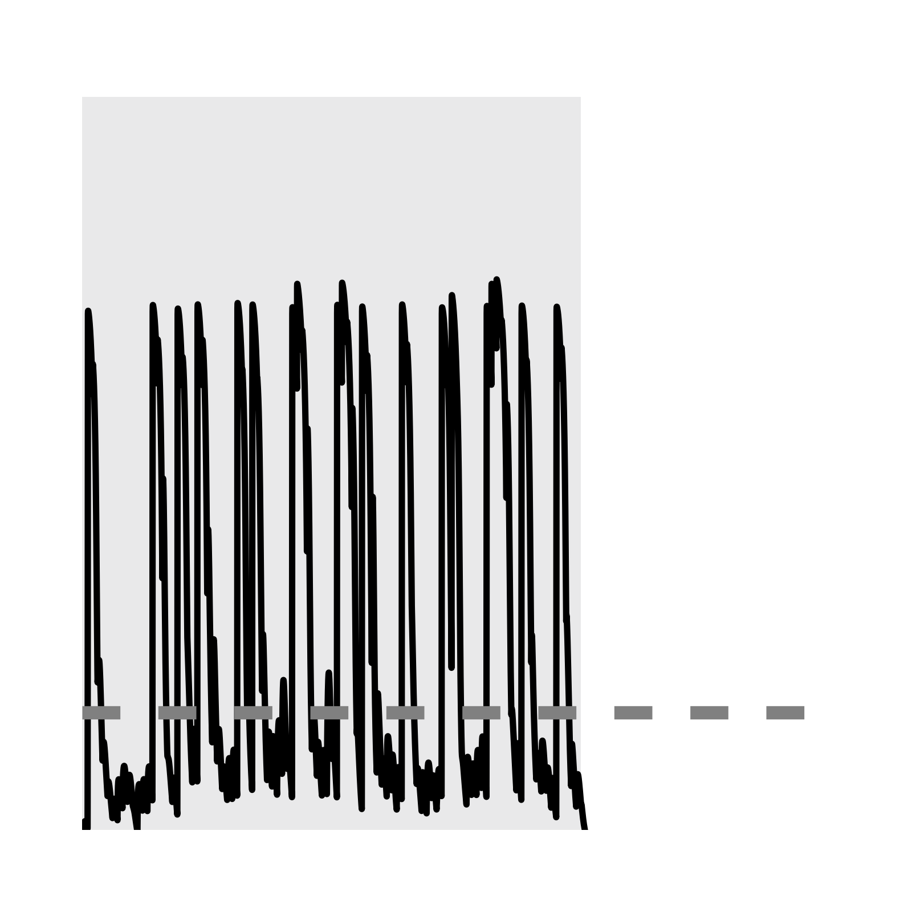
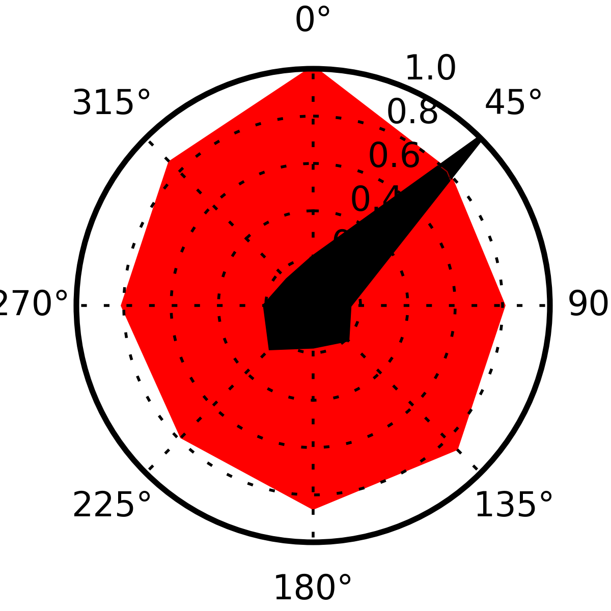
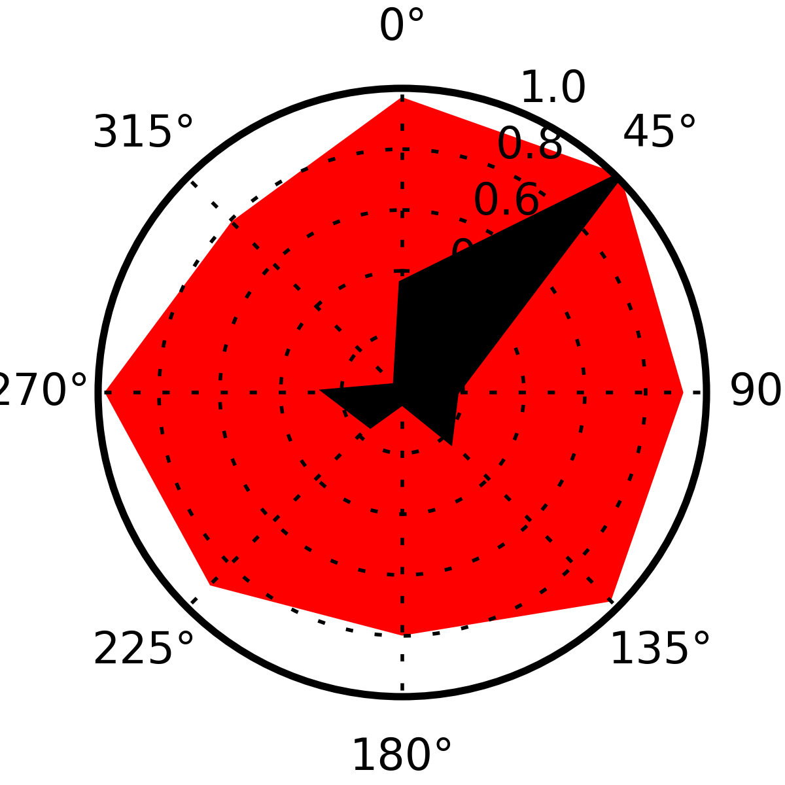
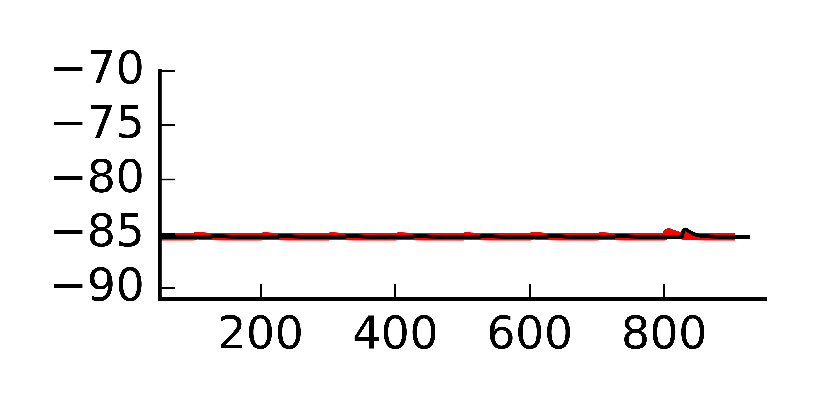
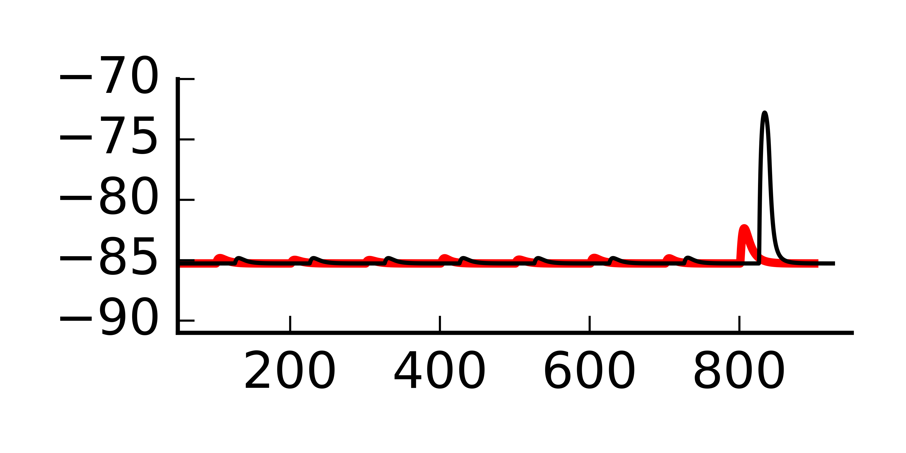
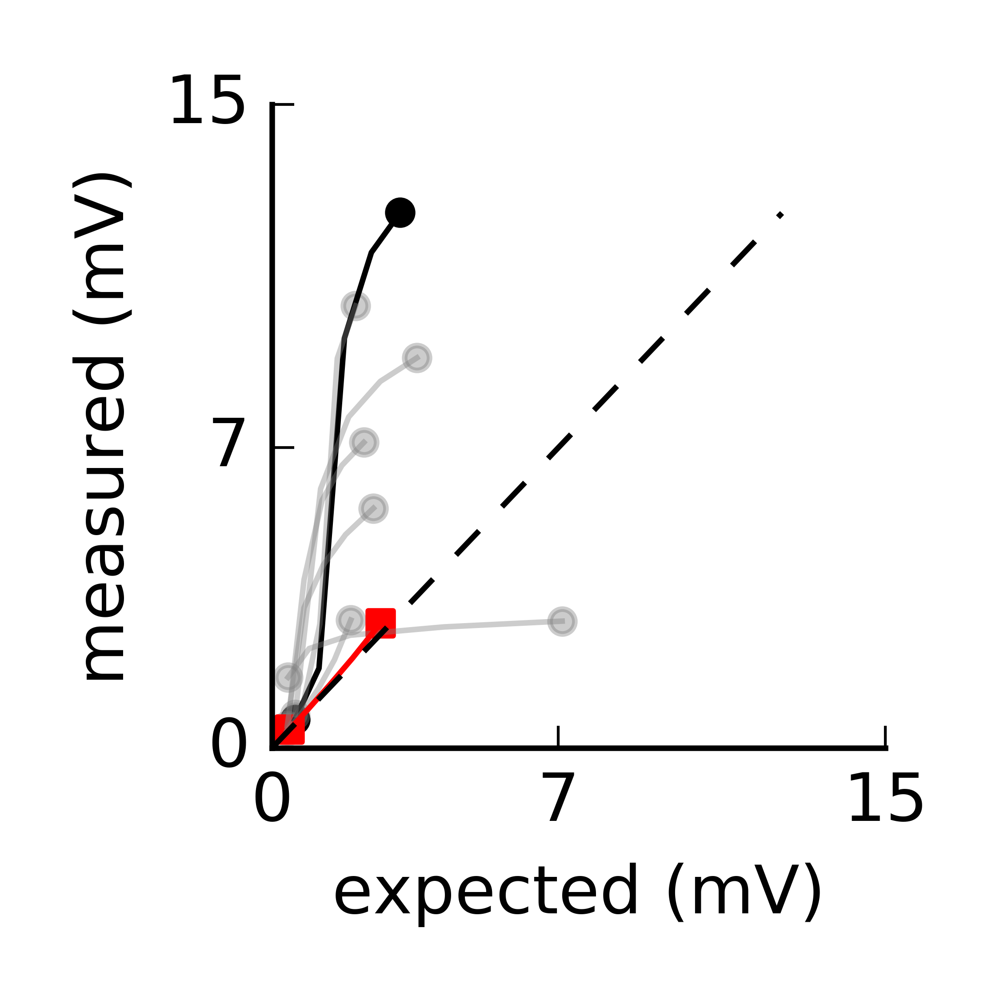

The code for the paper: Cazé RD, Jarvis S, Foust AJ, Schultz SR (2017) Dendrites Enable a Robust Mechanism for Neuronal Stimulus Selectivity. Neural Comput http://doi.org/10.1162/NECO_a_00989 Is available at the authors web site: https://github.com/rcaze/15_10CaFoClSc Run the code by compiling the mod files in the top level folder for example with nrnivmodl then run python main.py The code reproduces the figures in a top-level Figs folder, for example the papers figure 6 subpanels:       